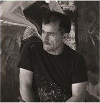
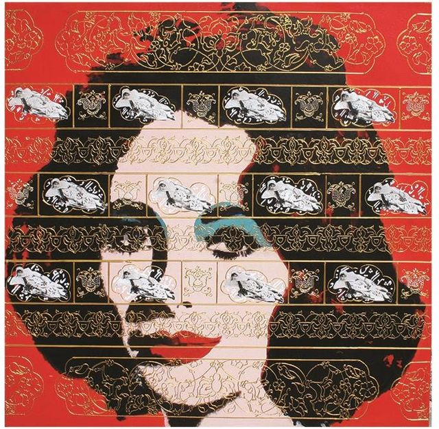
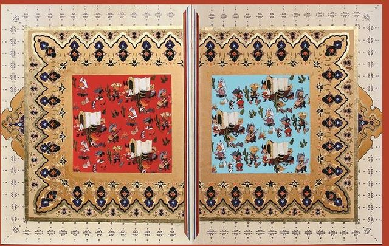
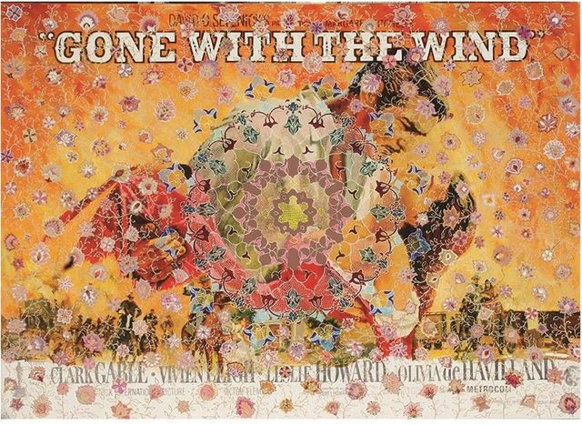
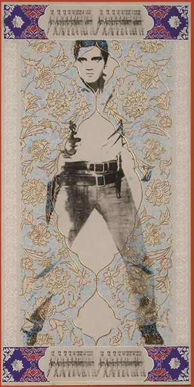
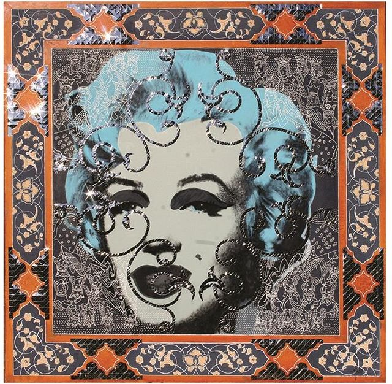
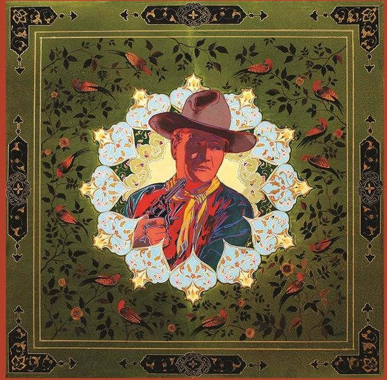
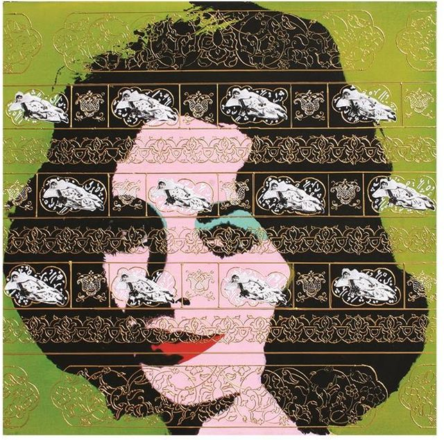
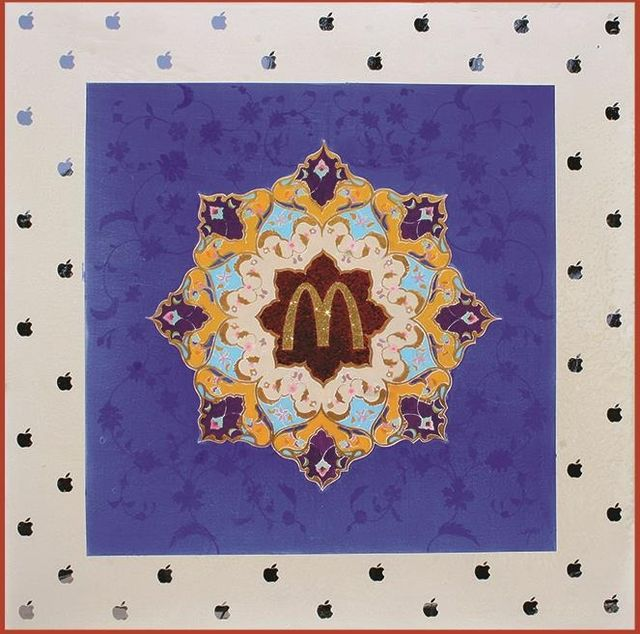

Artist
Mahmood Sabzi

- Born1951
- NationalityIranian
- Works9
- CatalogueContemporary Iranian Art, Tehran 2016
StatementAbout the work
Mahmood Sabzi's art comes from a heart that is both in the East and the West. He is not a diligent planner but forms flow out of him and always after the fact: one notices how much of him is intertextual and intercultural. Most of his works lie somewhere between memory and dream; between his emotions and his rational perspectives. In his works objects of various characters merge and conflate and become new forms while each maintaining its original integrity and character. He is also attracted to the epic structures of both the East and the West. He finds the signs that define a culture highly interesting and often wonders if these signs are real or just the concoctions of the collective fantasies. What people often do not understand about his works is that his paintings are not just the conflations of various cultural signs but also the deep sense of the exile and above all, the idea of alienation and of loss.
For him to transcend formal limits is to return to them and observe their quotidian operations. He wants to place the fleshy humanity and the material visions of our cultural lives at the center of our art and to contrast them with the dreams. He wants to secularize the transcendent.
Abbas Daneshvari, PhD
Chair, Department of Art
California State University, Los Angeles
Works9 artworks

















History of experienceBiography · education · exhibitions · awards
Education
- University of Jundi Shapur, BA, Agricultural Engineering
Solo exhibitions (Selected)
- 2016Shirin Art gallery|Tehran, Iran
- 2015Boom Gallery|Tehran, Iran
- 2013Azad Art Gallery|Tehran Iran
- 2012Azad Art Gallery|Tehran, Iran
- 2012Dar Al Funoon Gallery|Kuwait City
- 2011Azad Art Gallery|Tehran, Iran
- 2009Rosetta Stone Gallery, Jupiter|Florida, USA
- 2007First Impression, Palm Harbor|Florida, USA
- 2007McGuire Fine Art, Fredrick|Maryland, USA
- 2006Artagraphix, Westlake|California, USA
- 2005First Impression, Palm Harbor,|Florida, USA
- 2004Chasen Galleries|Richmond, Virginia, USA
- 2003Art Image Galleries, Gaithersburg|Maryland, USA
- 2002Wind Gallery, Dayton|Ohio, USA
- 2002The Art Shop, Greensboro|N. Carolina, USA
- 2001Ara Gallery, Cedar Rapids|Iowa, USA
- 2001Sahara Fine Art, Seattle|Washington, USA
- 2001Regency Fine Art, Atlanta|Georgia, USA
- 2000Art Image Gallery|Gaithersburg, Maryland,
- 2000The Art Shop, Greensboro|N. Carolina, USA
- 2000Barucci Gallery, St. Louis|Missouri, USA
- 2000Coast Gallery, Laguna Beach|California, USA
- 1999Art Collection House|Nagoya, Japan
- 1999Art Resource gallery, Edina|Minnesota, USA
- 1999Emerald City gallery, Seattle|Washington, USA
- 1998Harvest Gallery|Nagoya, Japan
- 1998Art Collection House|Nagoya, Japan
- 1998Barucci Gallery, St. Louis|Missouri, USA
- 1999Emerald City Gallery, Seattle|Washington, USA
- 1997Collectors Fine Art, Maui|Hawaii, USA
- 1995Emery Fine Art, Kalamazoo|Michigan, USA
- 1992Milleu Gallery, Malibu|California, USA
Group Exhibitions (Selected)
- 2015Galerie Nicolas Flamel|Paris, France
- 2015Qatar Museum|Doha, Qatar
- 2015Context Art Miami|Miami, Florida, USA
- 2012Beirut Art Fair|Beirut, Lebanon
- 2006Art Expo NY|New York, New York, USA
- 2005Art Expo NY|New York, New York, USA
- 2004Art Expo NY|New York, New York, USA
- 2003Art Expo NY|New York, New York, USA
- 2002Art Expo NY|New York, New York, USA
- 2001Bellaire Gallery|Dorset, United Kingdum
- 2001Art Expo NY, New York|New York, USA
- 2000Gallery Harvest|Nagoya, Japan
- 2000Art Expo NY|New York, New York USA,
- 1999Art Expo NY|New York, New York, USA
- 1998Art Expo CA|Los Angeles, California, USA
- 1998Art Expo NY|New York, New York, USA
- 1998Art 21 MGM G4rand Gallery|Las Vegas, USA
- 1996Art Expo NY|New York, New York, USA
- 1995Art Expo NY|New York, NewYork,USA
Collections
Museum Permanent Collection
- Los Angeles County Museum of Art, (LACMA) USA
- Tehran Museum of Contemporary Art (TMOCA) IRAN
Private Collections
- Works held in private collections|United States-Germany, France, and Japan.
Museum Participations
- 1994Las Ollas Museum of Art, Fort Lauderdale|Florida
- 1994Lowe Art Museum|Miami, Florida
Commission
- 1993Waymar Production, Set Decoration for the Film (Love Bite)
Bibliography
Printed Media
- Abbas.Daneshvari, "Modern-Postmodern: Crisis in Contemporary Arts."Forthcoming text
- Hamid Keshmirshekan, "Contemporary Iranian Art,New Perspectives", Saqi Books, Great Britain, 2013,Pg.328
- Abbas. Daneshvari, "Amazingly Original" Contemporary Iranian Art Crossroads, Mazda Publishing, California, 2014, Pg.53, 128. 141
- Deepa Pant, "Betwixt and Between, Contemporary Artist: Mahmood Sabzi", Bazar—Magazine, Jun, 2012
- Onilda Fernandez, "Funoon Displays Work by Sabzi ".Alwatan Daily, April, 2012
- Abbas. Daneshvari, " End of Purity, Art Tomorrow (Contemporary Art Magazine),Autumn 2011
- Susanne Casgar, "Today's Top Artists: Sabzi", Art Business News, July 2007
- Lauren La Rocca, Cover, "SABZI", The Fredrick News Post, Sep.2007
- Nicole Belanger, "Sabzi to visit McGuire Fine Arts" The Gazette / Fredrick City, Sep.2007
- Susanne Casgar, "California- Inspired Sabzi Represent Beauty in the Abstract." Art Business News, May 2006
- First Impression host Romantic Expressionist artist Sabzi Tampa Bay News paper Nov.2005
- Robert Haddocks, "Painter to make Debut with Exhibit Opening." Atlanta Journal July 2002
- Tracy McCormick, "Melancholy Moments", U.S. ART, Nov.1999
- Victoria Giraud, cover, "A painter in a Strange Land", Los Angeles Daily News, Nov.1996
Television
- M. Locher "WIR IM NORDEN", Mahmood Sabzi,Ausstellung, TV Chanel: SAT1, Germany November, 1989
- Manuel Moller, Art & Culure, Mahmood Sabzi, Ausstellung, TV Chanel Z.D.F, Germany November, 1989
Books & Catalogues
- "Enduring Mysteries " Collected Works of Sabzi (1989-1998) Essay: Abbas Daneshvari, Ph.D. Professor of Art History, C.S.U.L.A. Published by: Collectors Editions, Inc,USA, 1999
- "Memories, Collected Works of Sabzi (1998-2007) Essay: Cutting Edge Innovations: Abstractions
- Carlo Lamagna, Chair, Department of Fine Arts, New York University
- Essay: Expert from Modern Postmodern: Crisis in Contemporary Arts
- Abbas Daneshvari, Ph.D. Professor of Art History C.S.U.L.A.
- Published by: Collectors Editions, Inc, USA, 2007
- "Elusive Recollection"
- Essay: Abbas Daneshvari, Ph.D. Professor of Art History C.S.U.L.A. 2015
Artist Presentation, Talk & workshop
- Qatar Museum, Title: Past & Present Inspirations, 2015
Source: the Sobhan Gallery artist catalogue “Available art work_s. C. Mahmood Sabzi.pdf”.